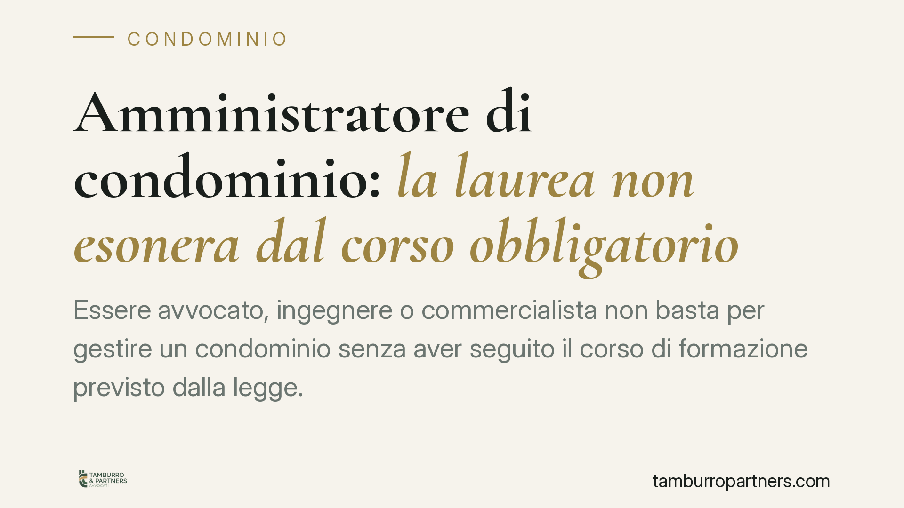

Amministratore di condominio: la laurea non esonera dal corso obbligatorio
Essere avvocato, ingegnere o commercialista non basta per gestire un condominio senza aver seguito il corso di formazione previsto dalla legge. La formazione iniziale e l'aggiornamento annuale restano obbligatori anche per i professionisti iscritti a un albo. La nomina di chi è privo dei requisiti è nulla: una questione che tocca condòmini e amministratori, con effetti concreti sulla validità degli atti.

Il punto
La convinzione che la laurea o l'iscrizione a un albo professionale liberino dagli obblighi formativi dell'amministratore di condominio è diffusa, ma errata. Il possesso di un titolo accademico o la qualifica di avvocato, ingegnere o commercialista non sostituiscono la formazione specifica richiesta dalla normativa condominiale.
La distinzione è importante: una cosa sono i requisiti di onorabilità e di istruzione (il diploma di scuola secondaria superiore), altra cosa è la formazione tecnica dedicata alla gestione del condominio. Il titolo di studio serve a soddisfare il primo requisito, non a esonerare dal secondo.
Inquadramento normativo
L'articolo 71-bis delle disposizioni di attuazione del Codice civile, introdotto dalla riforma del condominio (Legge n. 220/2012), elenca i requisiti per svolgere l'incarico di amministratore. Tra questi: il godimento dei diritti civili, l'assenza di condanne per determinati reati, il diploma di scuola secondaria di secondo grado e, soprattutto, l'aver frequentato un corso di formazione iniziale e lo svolgimento di attività di aggiornamento periodico.
Il Decreto del Ministero della Giustizia n. 140/2014 definisce i contenuti e la durata: 72 ore di formazione iniziale e 15 ore di aggiornamento annuale. Questi obblighi valgono per chiunque assuma l'incarico, salvo l'amministratore interno nominato tra i condòmini dello stesso edificio.
La legge non prevede alcuna esenzione a favore di chi è iscritto a un ordine professionale. Avvocati, ingegneri e commercialisti, se intendono operare come amministratori di condominio, devono assolvere gli stessi obblighi formativi previsti per ogni altro professionista del settore. L'interpretazione contraria, sostenuta in passato da alcune associazioni di categoria, non ha trovato riscontro.
Perché la nomina può essere nulla
La giurisprudenza ha chiarito che i requisiti dell'art. 71-bis non sono formalità burocratiche. La nomina di un amministratore che ne sia privo è affetta da nullità, ossia da un vizio radicale che può essere fatto valere senza limiti di tempo e, secondo l'orientamento prevalente, anche rilevato d'ufficio.
La nullità è un vizio diverso dall'annullabilità: mentre l'atto annullabile produce effetti finché non viene impugnato entro un termine, l'atto nullo è improduttivo di effetti sin dall'origine. Questo espone l'operato dell'amministratore privo dei requisiti a contestazioni significative.
Implicazioni pratiche
Per i condòmini, la questione non è teorica. Nominare un amministratore che non abbia i requisiti espone l'assemblea al rischio di delibere contestabili e di atti di gestione la cui validità può essere messa in discussione. È opportuno verificare, prima della nomina, che il candidato sia in regola con formazione iniziale e aggiornamento.
Per i professionisti che vogliono affiancare alla propria attività quella di amministratore, il messaggio è netto: il titolo di studio apre la porta, ma non consente di saltare la formazione. Avviare l'incarico senza i requisiti significa operare su basi fragili, con responsabilità personali potenziali.
Per gli amministratori in carica, l'aggiornamento annuale non è un adempimento facoltativo. La sua omissione incide sulla permanenza dei requisiti e può riflettersi sulla legittimità della conferma dell'incarico.
Cosa fare in concreto
- Verificate la documentazione prima della nomina. Richiedete all'aspirante amministratore gli attestati del corso iniziale (72 ore) e dell'ultimo aggiornamento annuale (15 ore).
- Non confondete titolo di studio e formazione. La laurea o l'iscrizione all'albo soddisfano il requisito di istruzione, non quello formativo specifico.
- Conservate traccia delle verifiche. Annotate a verbale di assemblea l'avvenuto controllo dei requisiti, a tutela della regolarità della nomina.
- Se siete amministratori, pianificate l'aggiornamento. Programmate ogni anno le 15 ore previste e conservatene l'attestazione.
- In caso di dubbi sulla validità della nomina, approfondite. Consigliamo di esaminare caso per caso gli effetti sugli atti già compiuti, data la natura radicale del vizio di nullità.
---
*Contributo informativo a cura di Tamburro & Partners - Avv. Giuseppe Tamburro. Non costituisce parere legale.*
Ogni condominio ha una storia a sé.
Se gestisci un'amministrazione e vuoi un confronto su una specifica questione condominiale, scrivi allo studio. Ti rispondiamo entro un giorno lavorativo.